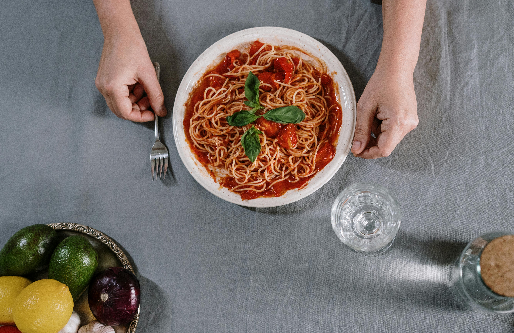

Spaghetti

Description
This is an easy to follow spaghetti recipe that you can easily do at home. It is a delicious and tasty dish that is loved by many and that can be eaten quickly.
Ingredients
- Pasta
- Tomato sauce
- Ground meat
- Salt
- Garlic
- Olive Oil
Steps
- Cook the tomato sauce
- Cook the pasta in salted water
- You can either put the pasta on another pan or put it directly in the tomato sauce
- Serve with hatever ingredient you like (cheese,mushrooms,etc.)